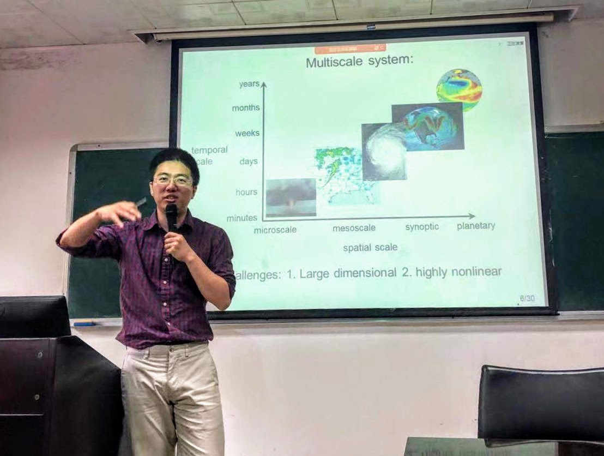
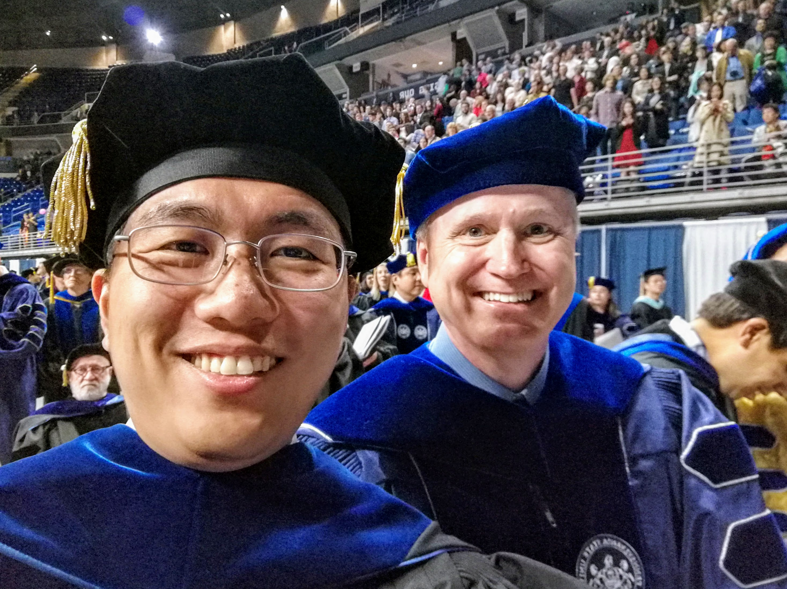
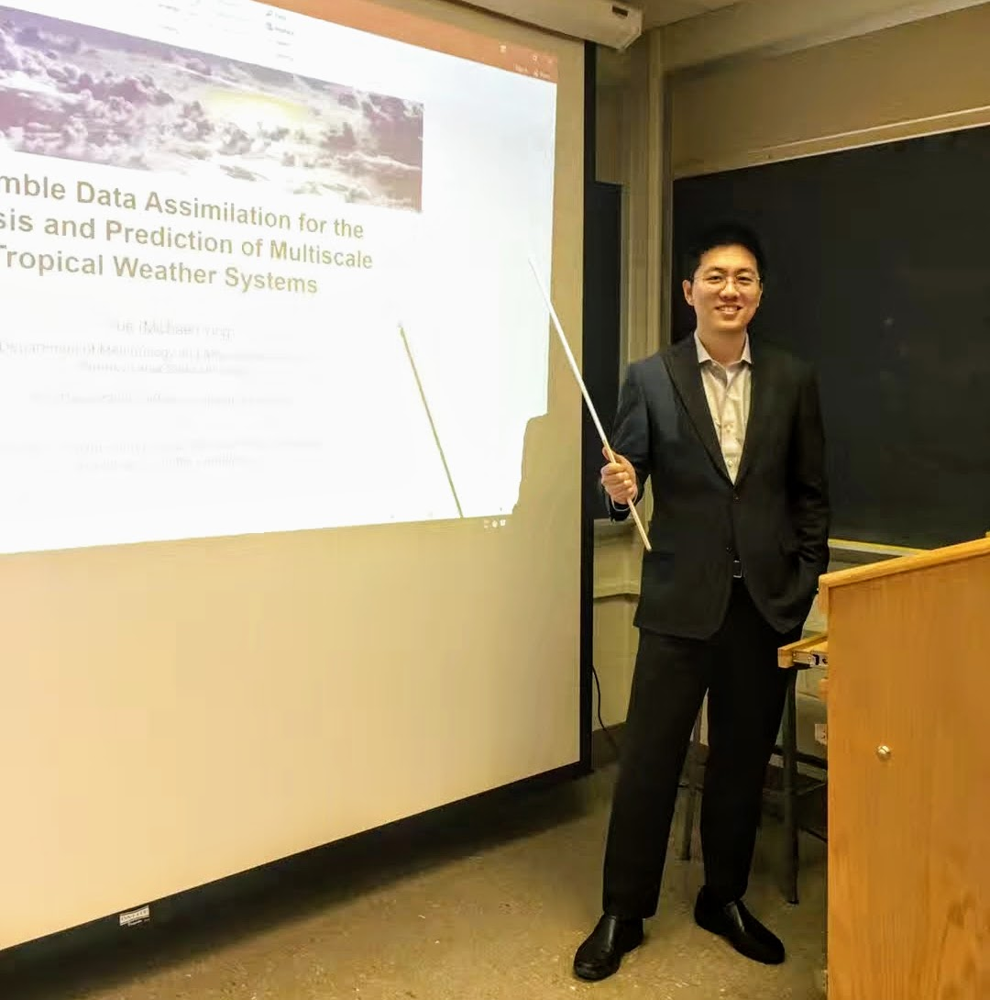
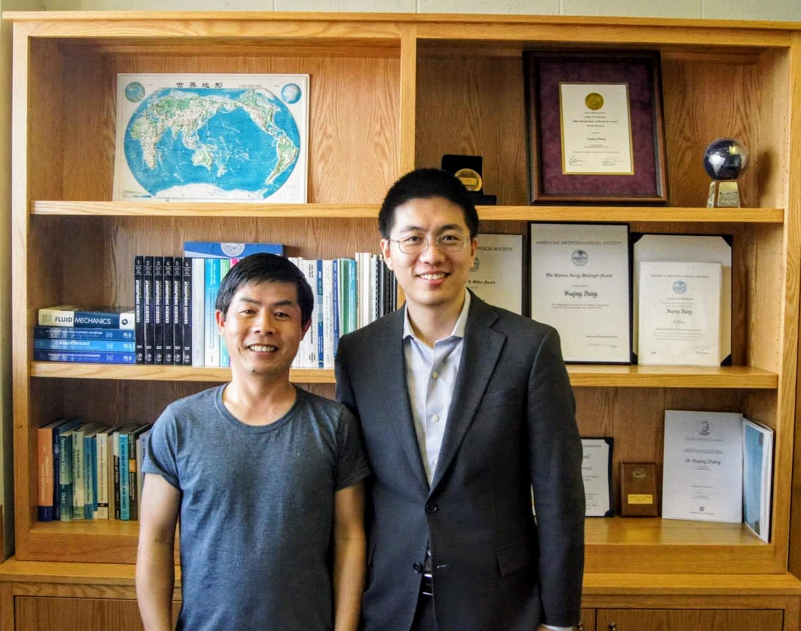
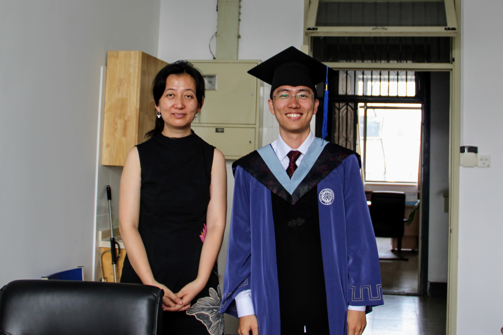

If you are interested in recent advancement in nonlinear and multiscale data assimilation methodologies, check out this session in the upcoming 2020 AMS annual meeting!
I just finished a three-week trip in China. I visited atmospheric science departments in several universities in Beijing, Shanghai, Nanjing, and Guangzhou, and enjoyed the discussion with researchers from many different backgrounds.

Today I gave a seminar talk in the Mesoscale & Microscale Meteorology Laboratory on the multiscale data assimilation and prediction problem that I have been recently working on. In the talk I also introduced the "multiscale alignment" method that I developed. Check out this video recording of my presentation:
Today I start my postdoc at the National Center for Atmospheric Research Advanced Study Program, where I will be exploring data assimilation methods for multiscale system prediction problems.
Commencement ceremony at Penn State! Fuqing is out of town so Dave Stensrud walked with me.

Today I successfully defended my PhD thesis titled "Ensemble data assimilation for the analysis and prediction of multiscale tropical weather systems".


I recieved the Al and Betty Blackadar Scholarship from the Department of Meteorology and Atmospheric Science at Pennsylvania State University.
I won the Best Student Presentation award at the 22nd AMS IOAS-AOLS Conference in January for my presentation entitled "On the selection of localization radius in ensemble filtering for multiscale quasigeostrophic dynamics". Check out the recording of this presentation:
Today I start my three-month visit to the National Center for Atmospheric Research, to work with Jeff Anderson on multiscale localization problems in ensemble data assimilation.
I graduated and got a M.S. degree in Meteorology from Peking University. Here is a picture of me and my advisor Qinghong Zhang.

I presented my work on tropical cyclone structural changes in response to ambient moisture variations at the 30th AMS Conference on Hurricanes and Tropical Meteorology.